This is the core section for defining the electricity plans you want to compare. You can add multiple providers, configure their specific import and export rates, fees, rebates, and even model complex conditions or EV charging rules.
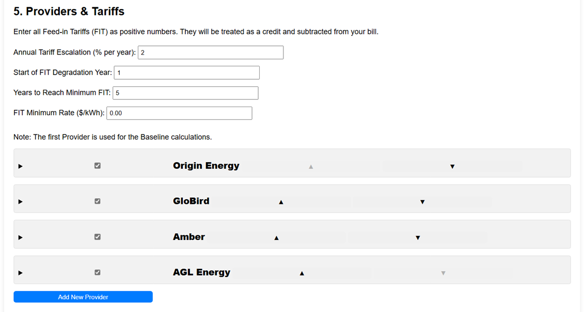
General Tariff Settings
These settings apply globally to all providers in the simulation.
Annual Tariff Escalation (% per year)
Enter the estimated percentage by which you expect electricity import rates and daily charges to increase each year (e.g., 2 for 2%). This helps model rising costs over the analysis period.
Feed-in Tariff (FIT) Degradation
These settings model how the rate you receive for exporting solar energy might decrease over time.
Start of FIT Degradation Year: The simulation year when the FIT rate begins to decrease.
Years to Reach Minimum FIT: The number of years it takes for the FIT rate to linearly decrease from its starting value down to the minimum rate.
FIT Minimum Rate ($/kWh): The lowest rate the FIT will fall to after the degradation period. This can be zero or even negative. A negative value means you would potentially pay to export energy if wholesale prices drop below zero and your plan reflects this.
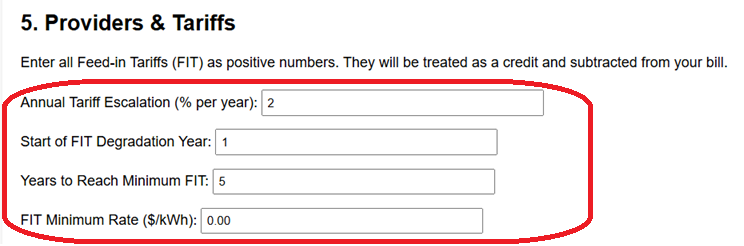
Managing Providers
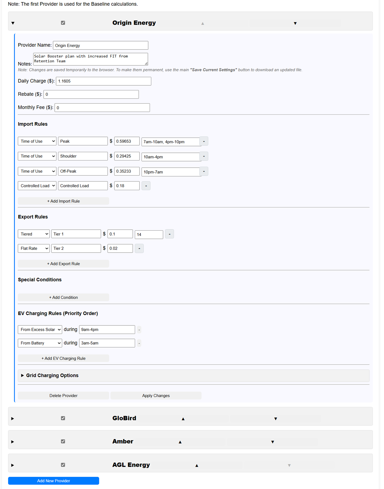
Adding a Provider
Click the Add New Provider button at the bottom of the section. A new "New Provider" entry will appear in the list.
Selecting Providers for Analysis
Use the checkbox next to each provider's name to include them in the next analysis run. You must select at least one.
Baseline Provider: The first checked provider in the list is always used as the Baseline for comparison. The simulation calculates what your costs would be without the new system, using this first provider's tariffs.
Reordering Providers
Use the ▲ and ▼ buttons next to a provider's name to change their position in the list. This is important for setting which provider acts as the Baseline.
Expanding/Collapsing Provider Details
Click the summary bar (containing the checkbox and name) to expand or collapse the detailed settings for that provider.
Deleting a Provider
Expand the provider's details and click the Delete Provider button at the bottom of their section.
Resetting All Providers to Defaults
At the very top of the analyser page (above Section 1), there is a Reset All Providers button.
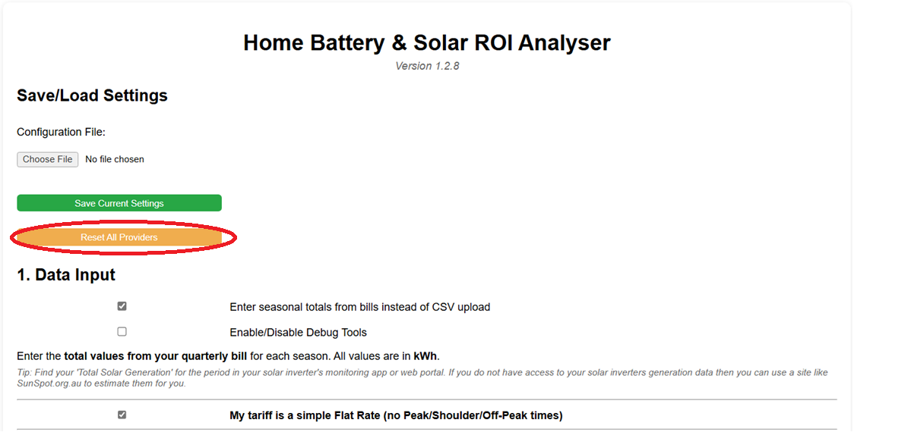
Warning: Clicking this button will permanently delete all your current provider configurations (including any custom ones you've added or edited) and restore the original default providers that came with the analyser. This action cannot be undone.
This is useful if you have made many changes and want to start fresh with the default settings.
Tip: Before resetting, you might want to save your current configuration using the main Save Current Settings button (at the top of the page). This saves all your settings, including providers, to a JSON file. You can restore your custom providers later by using the Choose File button to load this saved file.
Applying Changes vs. Saving Settings
Changes you make within a provider's section (rates, rules, etc.) are temporary within your browser session.
Click Apply Changes within a provider's section to make the analyser aware of your edits for the next simulation run in this session.
Use the main Save Current Settings button (at the top of the page) to download a JSON file containing all your configurations. This is how you permanently save your work or transfer settings.
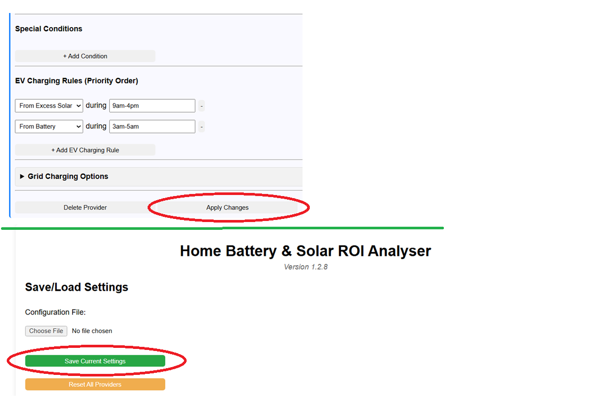
Configuring a Provider's Details
Expand a provider to configure their specific plan details.
Basic Info
Provider Name: Edit the name for clarity (e.g., "AGL - Solar Savers").
Notes: Add any relevant details (plan name, quote date, etc.).
Daily Charge ($): The fixed daily supply charge.
Rebate ($): Any upfront rebate (e.g., solar feed-in rebate) associated with choosing this provider or plan. This is subtracted from the initial system cost for this provider's analysis.
Monthly Fee ($): Any recurring monthly fee (e.g., for premium wholesale access plans).
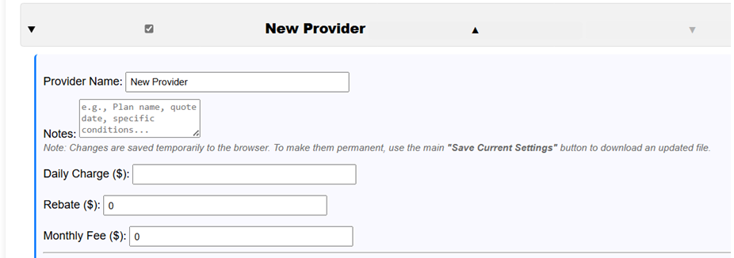
Import Rules
Define how the provider charges for electricity imported from the grid. Click + Add Import Rule to add rows. Rules are processed in order.
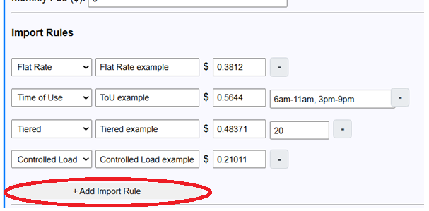
Type:
Time of Use (TOU): Charges a specific rate only during the hours you define in the 'Hours' field.
Enter time ranges separated by commas (e.g., "7am-10am, 4pm-10pm").
You can define ranges that span across midnight (e.g., "10pm-7am").
Any hours *not* explicitly covered by a TOU rule in your list will automatically be treated as 'Off-Peak' by the simulation and will typically be covered by a final 'Flat Rate' rule if you add one.
Tiered: Applies a specific rate to a defined block (tier) of energy used per day, up to the specified 'Limit (kWh)'.
Requires a 'Limit (kWh)' value (e.g., "10" for the first 10 kWh).
Order Matters: Tiered rules are processed based on their order in the list. Place the rule for the first tier (lowest limit) highest in the list.
Any usage beyond the limit of a tier will be processed by subsequent rules (like another Tiered rule with a higher limit, a TOU rule, or a Flat Rate rule).
Example: Rule 1: Tiered, Rate $0.30, Limit 10 kWh. Rule 2: Flat Rate, $0.20. The first 10 kWh imported today cost $0.30/kWh, all remaining import costs $0.20/kWh.
Flat Rate: Charges a single rate for all usage not covered by preceding rules.
Controlled Load: A specific rate for a dedicated circuit (e.g., hot water). Often applies during off-peak hours, but doesn't require hours to be entered here.
Name: A descriptive name (e.g., "Peak", "Tier 1", "Off-Peak").
Rate ($/kWh): The cost per kilowatt-hour.
Hours (for TOU): Comma-separated time ranges (e.g., "3pm-11pm").
Limit (for Tiered): The kWh threshold for the tier (e.g., "14").
Use the - button to remove a rule.
Tip: For a simple flat rate plan, just add one rule with Type = Flat Rate and enter the rate.
Export Rules (Feed-in Tariff / FIT)
Define how the provider credits you for excess solar energy exported to the grid. Click + Add Export Rule to add rows. Rules are processed in order.
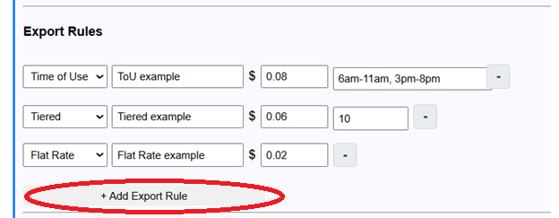
Type: Similar to Import Rules (TOU, Flat Rate). Controlled Load is not applicable here.
Tiered Type Details: Applies a specific credit rate to a block (tier) of energy exported per day, up to the 'Limit (kWh)'.
Requires a 'Limit (kWh)' value (e.g., "10" for the first 10 kWh exported).
Order Matters: Place the rule for the highest-paying tier (usually with the lowest limit) first in the list.
Export beyond a tier's limit is processed by subsequent rules.
Example: Rule 1: Tiered, Rate $0.12, Limit 10 kWh. Rule 2: Flat Rate, $0.05. The first 10 kWh exported today earn $0.12/kWh, all remaining export earns $0.05/kWh.
Name: A descriptive name (e.g., "Peak FIT", "Tier 1 Export").
Rate ($/kWh): The credit per kilowatt-hour exported. Enter this as a positive number.
Hours (for TOU): Comma-separated time ranges.
Limit (for Tiered): The daily kWh threshold for the export tier (e.g., first "10" kWh exported get a higher rate).
Use the - button to remove a rule.
Important: The FIT Rate entered here is the base rate for Year 1. The analyser will automatically apply the FIT Degradation settings (from the top of Section 5) to this rate in subsequent years of the simulation.
Special Conditions
Model non-standard charges or credits based on specific conditions (e.g., daily bonus for low peak usage). Click + Add Condition to add rows.
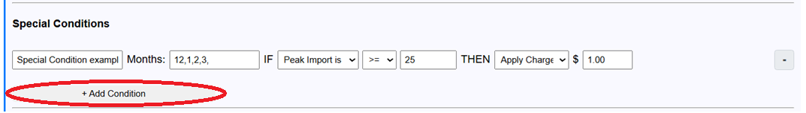
Name: Describe the condition (e.g., "Low Peak Bonus").
Months: Comma-separated months (1-12) when this rule applies. Leave blank for all year.
IF Condition:
Metric: What to measure (Peak Import, Net Grid Usage, Import in Window).
Hours (for Window): Time range if using "Import in Window".
Operator: Comparison (<=, <, >, >=).
Value (kWh): The threshold for the comparison.
THEN Action:
Type: Apply Credit or Apply Charge.
Amount ($): The flat dollar amount for the credit/charge.
Use the - button to remove a condition.
EV Charging Rules
Define the priority order for how an electric vehicle (added in Section 1) should be charged. Click + Add EV Charging Rule to add rows. Rules are evaluated top-down for each hour.
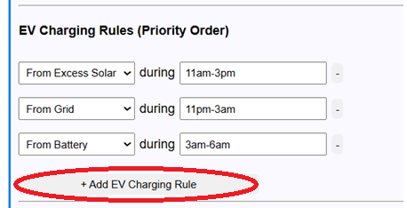
Source: Where should the EV try to draw power from first? (Excess Solar, Grid, Battery).
During (Hours): When does this rule apply? (e.g., "10pm-6am" for overnight grid charging, "9am-4pm" for daytime solar charging).
The analyser will try the first matching rule for an hour. If that source can't provide power (e.g., no excess solar), it moves to the next rule.
Use the - button to remove a rule.
Battery Grid Charging Options
Configure if and when the house battery (not the EV) should charge from the grid for this specific provider. This is typically used to charge the battery during cheap off-peak times.
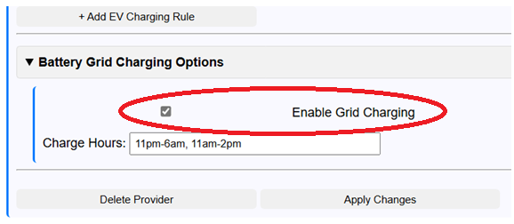
Enable Grid Charging: Checkbox to allow grid charging.
Charge Hours: Enter the time range(s) when grid charging is permitted, using am/pm format (e.g., "11pm-6am", or "10am-2pm, 11pm-5am"). Handles overnight ranges.
Interaction with Section 3 Settings: Grid charging will only start if the battery is below the "Only charge if battery is below (%)" threshold (set globally in Section 3). It will then charge up to the "Charge battery from grid to a maximum of (%)" threshold (also set in Section 3), respecting the inverter power limit.